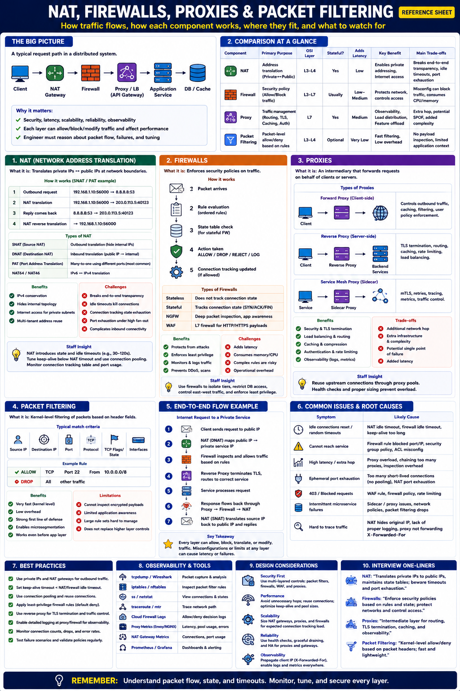

Staff Engineer Reference — Networking & Security
Every packet in a distributed system passes through multiple networking layers before reaching its destination.
Each component influences:
NAT translates private IP addresses into public IP addresses, allowing private networks to communicate with external networks.
Why NAT Exists:
| Type | Purpose | Example |
|---|---|---|
| SNAT | Translate source IP | Outbound Internet access |
| DNAT | Translate destination IP | Public LB → private service |
| PAT | Share one public IP via different ports | Home routers |
| NAT64 | IPv6 ↔ IPv4 translation | Dual-stack networks |
Common NAT Issues:
| Problem | Cause |
|---|---|
| Idle connections drop | NAT idle timeout expires |
| Port exhaustion | Too many outbound connections |
| Hard-to-debug networking | Address translation hides original endpoints |
| Connection tracking overflow | Large fan-out traffic |
A firewall enforces security policies by allowing or blocking traffic based on predefined rules.
| Type | Description |
|---|---|
| Stateless | Evaluates each packet independently — no connection tracking |
| Stateful | Tracks connection state; allows return traffic automatically |
| NGFW | Deep packet inspection + application-layer awareness |
| WAF | Protects HTTP/HTTPS apps — inspects Layer 7 content (SQL injection, XSS, etc.) |
Common rule match criteria: Source IP · Destination IP · Port · Protocol · TCP flags · Connection state
A proxy sits between clients and servers, forwarding requests on behalf of one side. It can route traffic, cache responses, terminate TLS, authenticate users, rate limit, and log requests.
Outbound traffic control, corporate filtering.
Used by nearly every production app. NGINXEnvoyHAProxy
mTLS, retries, tracing, routing. EnvoyIstio
| Advantage | Trade-off |
|---|---|
| Better security (TLS offload, auth) | Additional network hop |
| Centralized policies | More infrastructure to manage |
| Easier TLS certificate management | Potential single point of failure |
| Improved observability (access logs, metrics) | Added latency (1–5 ms typical) |
Packet filtering examines packet headers and decides whether to allow or block traffic. It runs at the kernel level — extremely fast with very low overhead.
Typically filters on: Source IP · Destination IP · Port · Protocol · Connection state
Where it runs:
✅ Advantages
⚠️ Limitations
| Feature | NAT | Firewall | Proxy | Packet Filter |
|---|---|---|---|---|
| Primary Purpose | Address translation | Security policy | Traffic management | Packet control |
| OSI Layer | L3–L4 | L3–L7 | L7 | L3–L4 |
| Stateful | Yes | Usually | Yes | Optional |
| Adds Latency | Very Low | Low–Medium | Medium (~1–5 ms) | Very Low |
| Connection Tracking | Yes | Yes | Yes | Optional |
| Observability | Low | Medium | High | Low |
Each layer has a distinct responsibility. Overlapping layers provide defense in depth.
| System | How Used |
|---|---|
| Public API | Reverse proxy + firewall + WAF |
| Kubernetes | NAT + Network Policies + Service Mesh (Envoy/Istio) |
| CDN | Reverse proxy + caching + DDoS protection |
| Private VPC | NAT Gateway for outbound traffic |
| Banking System | Firewall segmentation + WAF + strict egress rules |
| Multi-region Service | Proxies + health-aware routing |
| Internal Services | Packet filtering + Cloud Security Groups |
| Symptom | Likely Cause |
|---|---|
| Idle connections reset | NAT timeout expired |
| Cannot reach backend | Firewall rule misconfiguration |
| High API latency | Overloaded reverse proxy |
| Connection refused | Packet filtering blocked port |
| Ephemeral port exhaustion | NAT connection churn — too many short-lived connections |
| Unexpected 403/blocked traffic | WAF or firewall policy triggered |
| Intermittent microservice failures | Service mesh proxy issues (mTLS cert expiry, config drift) |
| Tool | Purpose |
|---|---|
iptables -L / nft list ruleset | Inspect packet filtering rules |
tcpdump | Capture live packets |
Wireshark | Analyze captured packet flows |
ss / netstat | View TCP connections and socket state |
traceroute | Trace network path and identify drops |
| Cloud Firewall Logs | Verify allow/deny decisions |
| Proxy Metrics (Envoy, NGINX) | Latency, retries, error rates, connection reuse |
| NAT Gateway Metrics | Active connections, port usage, packet drops |
| Component | Recommendation |
|---|---|
| NAT | Use connection pooling; tune keep-alive below NAT idle timeout |
| Firewall | Apply least-privilege rules; regularly audit and version-control policies |
| Proxy | Reuse backend connections; enable health checks; avoid unnecessary proxy hops |
| Packet Filtering | Keep rules minimal, automated, and well-documented |
| All Layers | Monitor latency, dropped packets, connection counts, and error rates |
| Level | Thinking Pattern |
|---|---|
| Junior | "I opened port 443 in the firewall. The service is reachable now." |
| Senior | "I configure Security Groups to allow only necessary ports, use a reverse proxy for TLS termination, and put databases in private subnets behind NAT." |
| Staff | "I design defense-in-depth: NAT for private networking with connection pooling and keep-alive tuned below NAT timeout; stateful firewalls + WAF at the perimeter; reverse proxies for TLS offload, routing, caching, and rate limiting; packet filtering at the host/pod level via iptables or eBPF; and service mesh mTLS for zero-trust east-west security. I instrument each layer with metrics and logs so I can distinguish 'blocked by firewall' from 'dropped by NAT' from 'proxy overloaded' during incidents." |
